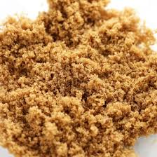
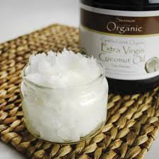
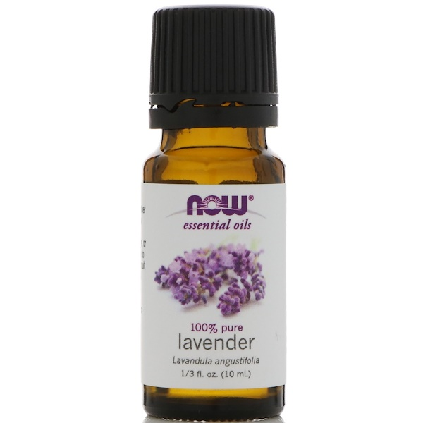
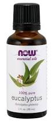

Ingrediants
- 1/2 cup Ground Coffee
- 1/2 cup Sugar
- Granulated Sugar
- Brown Sugar

- 1/2 oil
- Olive Oil
- Coconut Oil

- 1 tsp. Essential Oil
- Lavender

- Eucalyptus

Instructions
- Mix together 1/2 cup fresh ground coffee and 1/2 cup sugar.
- Add 1/2 cup oil into the coffee mixture and 1 tsp. Essential oil.
- Mix until well combined.
How to Use: Gently rub the mixture over your body—avoid areas around the eyes. Leave it on for several minutes. Rinse thoroughly.